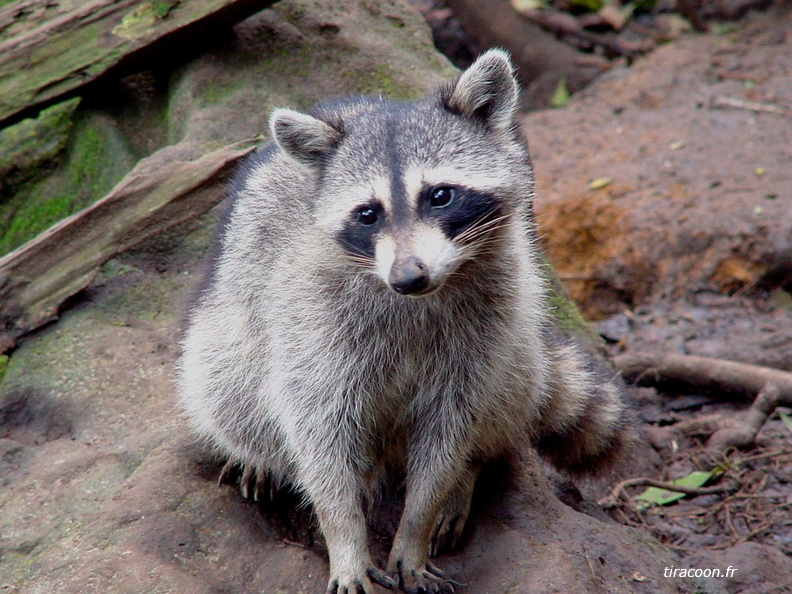
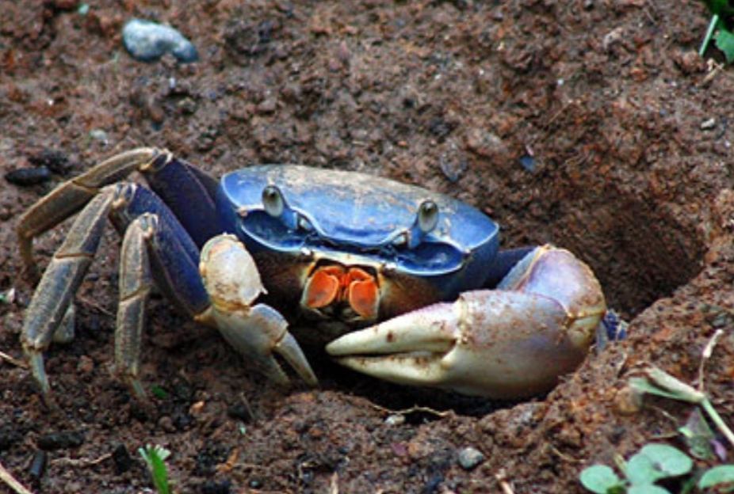
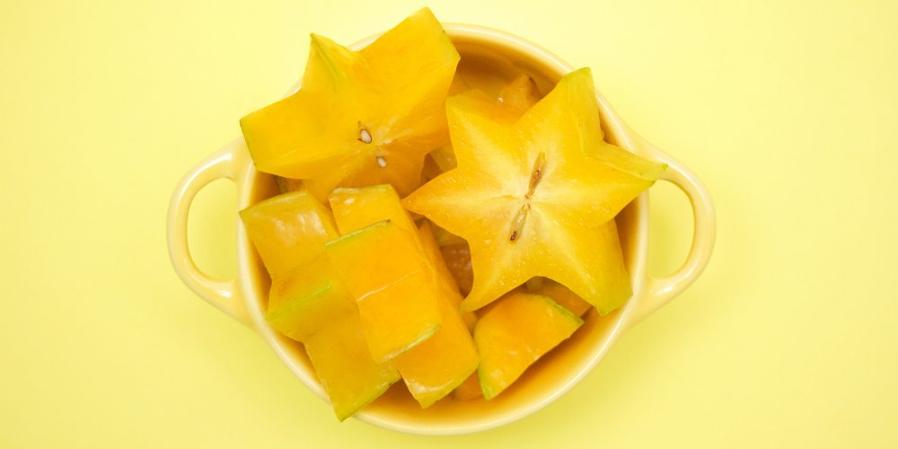

Le Lamantin
Les lamantins (Trichechus) sont un genre de gros mammifères aquatiques herbivores, au corps fuselé, vivant en eaux littorales peu profondes, dans les lagunes ou l'embouchure des fleuves et les marais côtiers de la zone tropicale de l'océan Atlantique. Ce sont des animaux paisibles qui ont besoin d'une eau à une température d'au moins 20 °C pour vivre. Les lamantins ont une masse de 400 à 550 kg, pour une longueur allant de 2,8 à 3 m, avec des maxima de 3,6 m et 1 775 kg ; les femelles ont tendance à être plus grandes et plus lourdes3. À la naissance, les lamantins ont une masse moyenne de 30 kg. Nous avons eu la chance d'acceuillir deux Lamantins (kai et junior) dans le centre d'élevage qui se trouve a Blachon dans la commune du Lamentin.
Le Racoon
Encore appelé “Ti-racoon” en créole, Le racoon n’est pas un animal originaire de la Guadeloupe. En effet, ce petit raton laveur a été introduit dans le territoire guadeloupéen lors du naufrage d’un bateau américain dans l’archipel au XVIe siècle. Se nourrissant essentiellement de fruits, d’oiseaux et de poissons, le racoon est un raton laveur préférant un mode de vie plutôt nocturne.ce raton laveur est un maraudeur vif et espiègle. Sa morphologie particulière le rend très attendrissant, il fait figure de mascotte pour le parc national de la Guadeloupe. C’est un petit animal qui possède un pelage gris-brun sur le dos et gris clair sur le ventre et ses membres. Il donne l’impression de porter un masque de loup, il possède des oreilles bien dégagées, tenues droites, une queue relativement longue, touffue et annelée poivre-sel. Son espérance de vie est en moyenne de 10 ans et sa gestation d’environ 9 à 10 semaines.
Le Crabe

Le crabe est un animal de mer. C'est un arthropode, un crustacé. Les crabes possèdent huit pattes et deux pinces, plus ou moins grandes selon les espèces, deux yeux et une carapace. Ils se déplacent en marchant sur le côté. En guadeloupe le crabe est connu pour etre mangé de differentes facon: en matété , en dombré... En France Si chocolat et agneau pascal font partie intégrante des célébrations de Pâques dans les Antilles : la fête du crabe. Entre spiritualité et convivialité, cette fête est célébrée le week-end de Pâques dans les Îles de Guadeloupe.
Pour continuer sur la nouritures nous allons voir quels autres aliment mais plus precisement les fruits et les legumes
Fruit a pain

Le fruit à pain est un fruit comestible qui pousse sur l'arbre à pain, artocarpus altilis, originaire d'Océanie et largement répandu sous les tropiques. Consommé cuit, de la même manière que les pommes de terre, le fruit à pain est parfois appelé tout simplement pain ou même brioche le fruit a pain peut etre manger avec differentes choses mais en Guadeloupe il est le plus souvent manger avec du poisson comme de morue soit en sauce ou non selon les gout , il peut etre fait en gratin , en migan et meme en gateau
Carambole
le fruit est une baie à cinq carpelles soudés dont la section forme une étoile et contenant chacun deux graines plates. Selon les variétés, plus ou moins acidulées, il est utilisé en jus ou en salade de fruits, en confiture ou dans des sauces. Il est surtout utilisé pour décorer les plats et desserts. Le fruit ou son jus peuvent être toxiques, l'intoxication à la carambole est grave. mais reste assez appricié par beaucoup de monde.
L'arbre du voyeur

est une espèce de plantes tropicales de la famille des Strelitziaceae, originaire de Madagascar. On considérait classiquement que le genre Ravenala était monospécifique, avec donc une seule espèce Une légende erronée voulait que son nom d'« arbre du voyageur » provienne de ce que l'eau de pluie, qui s'accumule dans les cavités à la base de ses feuilles, permettait aux voyageurs de se désaltérer. Mais cette eau, où macèrent feuilles et insectes morts aux températures tropicales, est impropre à la boisson.